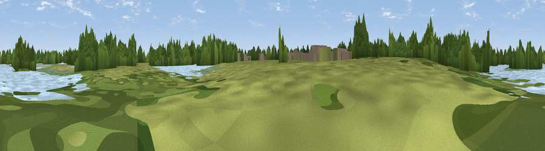

Viewpoint near Fen Drayton
#44143 in England · top 68% of its area beats it · near Fen DraytonThe view, rendered

A 360° render of this exact spot computed from the terrain model, tree cover and land cover — summer colours, afternoon light, calibrated against photographs of famous viewpoints. Real trees, hedges and buildings will differ in detail.
The panorama
Grey silhouette: terrain skyline in each direction (720 bearings, Earth curvature and refraction included). Dashed green: skyline with trees (+15 m) and buildings (+8 m) as obstacles. Blue strip: how far the ground is visible on each bearing.
Where the view opens
Wedge length = distance to the farthest visible ground on that bearing (vegetation-aware). Rings at 10, 25 and 50 km.
What fills the view
34% water · 26% grassland · 24% woodland · 8% wetland · 7% cropland · 1% built-up
Angular shares of the visible panorama (visual magnitude), not map area. Landscape diversity 0.65 (0–1 Shannon).
Key numbers
More beautiful places nearby
The staircase of upgrades: each row has a higher view potential than everything closer. Driving times are estimates from straight-line distance, calibrated against real road routing — check an actual route before setting out.
| Place | Direction | Drive | Score |
|---|---|---|---|
| Bird lookout | NE · 1 km | ~2 min | 26.1 |
| Bird lookout | NE · 5 km | ~12 min | 26.6 |
| Crow Hill | SSW · 10 km | ~20 min | 34.5 |
| Viewpoint near Brampton | W · 12 km | ~23 min | 35.9 |
| Viewpoint near Coton | SSE · 14 km | ~25 min | 41.8 |
| Orwell Hill | S · 18 km | ~31 min | 43.0 |
| Viewpoint near Harlton | SSE · 18 km | ~31 min | 49.6 |
| Viewpoint near Stapleford | SE · 22 km | ~37 min | 54.8 |
52.30336, -0.04407 · source: osm viewpoint · position refined by local search. Computed location — check access rights before visiting.